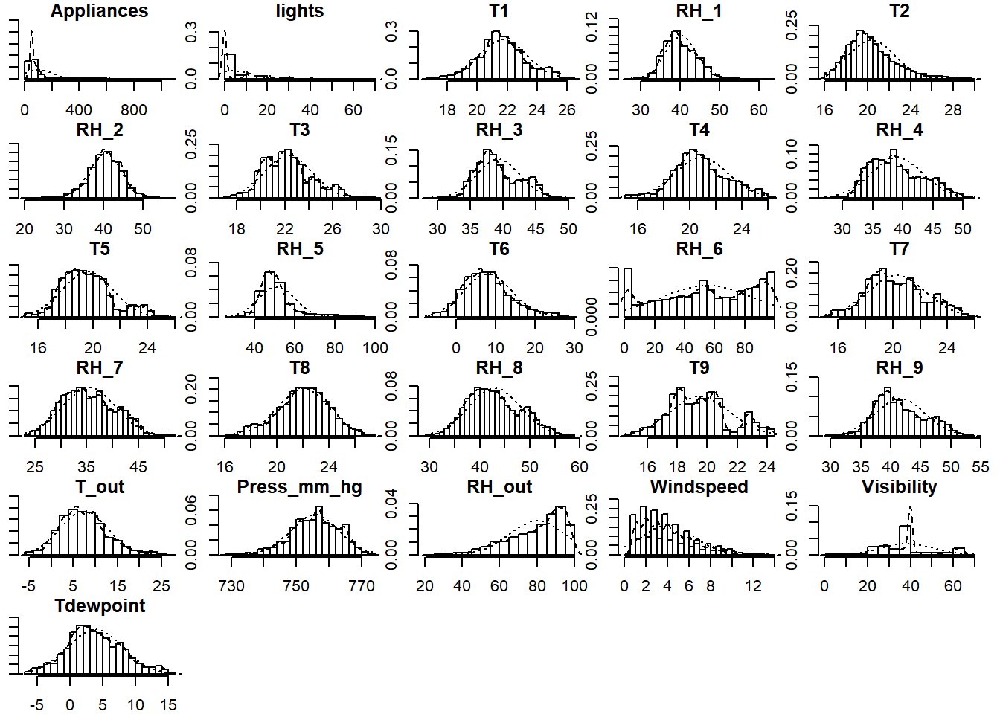
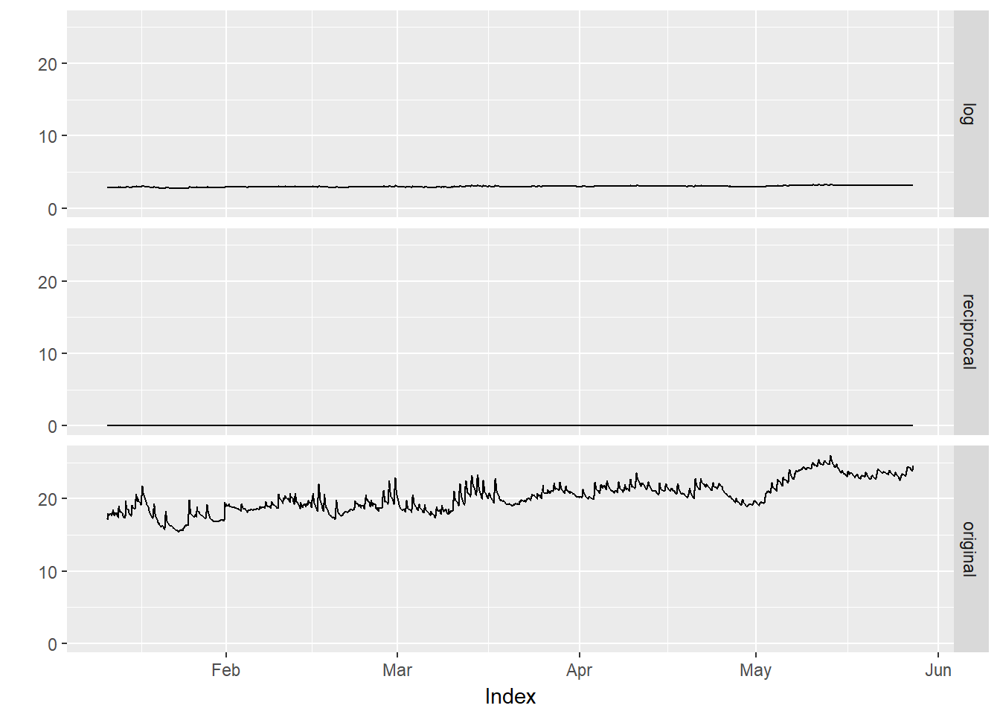
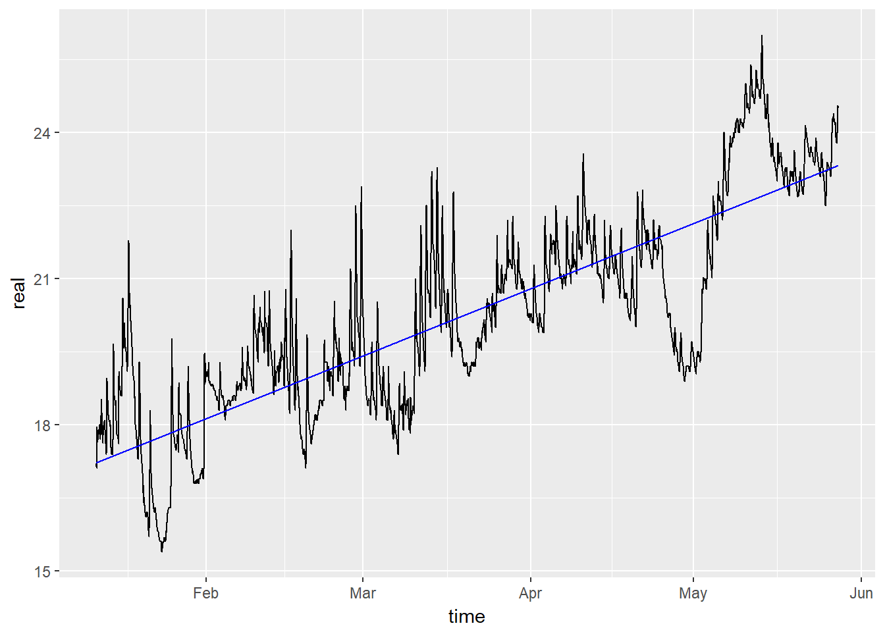

The following libraries will be used in this project.
library(astsa)
library(ggplot2)
library(forecast)
library(dynlm)
library(xts)
library(corrplot)
library(psych)The dataset used in this project is about Appliances energy prediction Data Set that is available on UCI website. The data set is at 10 min for about 4.5 months. The house temperature and humidity conditions were monitored with a ZigBee wireless sensor network. Each wireless node transmitted the temperature and humidity conditions around 3.3 min. Then, the wireless data was averaged for 10 minutes periods. The energy data was logged every 10 minutes with m-bus energy meters. Weather from the nearest airport weather station (Chievres Airport, Belgium) was downloaded from a public data set from Reliable Prognosis (rp5.ru), and merged together with the experimental data sets using the date and time column. Two random variables have been included in the data set for testing the regression models and to filter out non predictive attributes (parameters).
The following attributes are used in this dataset:
The dataset as demonstrated above contains multi timeseres variables that can be used for the prediction of the target variable, i.e., Appliance. However, in this project the focus will be paid on analysing some timeseries features to demonstrate the learned lessons from this course.
First of all data must be fetched and changed to the timeseres datatype. Since the data is stored in a CSV file, we read it by the standard function and then convert it to TS or XTS. It must be mentioned that there is no missing values in this dataset, as shown bellow:
#Reading Data
energy=read.table(file = "https://archive.ics.uci.edu/ml/machine-learning-databases/00374/energydata_complete.csv", header = TRUE, sep=",")
#checking NA
sum(is.na(energy))
## [1] 0
#Converting to XTS
energy_xts=xts(energy[,-1], order.by = as.POSIXct(energy$date, format="%Y-%m-%d %H:%M:%S", tz="GMT"))
#Head of the dataset (for the sake of represenation only for some features are shown)
head(energy_xts[,3:7])
## T1 RH_1 T2 RH_2 T3
## 2016-01-11 17:00:00 19.89 47.59667 19.2 44.79000 19.79
## 2016-01-11 17:10:00 19.89 46.69333 19.2 44.72250 19.79
## 2016-01-11 17:20:00 19.89 46.30000 19.2 44.62667 19.79
## 2016-01-11 17:30:00 19.89 46.06667 19.2 44.59000 19.79
## 2016-01-11 17:40:00 19.89 46.33333 19.2 44.53000 19.79
## 2016-01-11 17:50:00 19.89 46.02667 19.2 44.50000 19.79
#Tail of the dataset
tail(energy_xts[,3:7])
## T1 RH_1 T2 RH_2 T3
## 2016-05-27 17:10:00 25.53333 46.86000 25.97800 42.53400 27.32333
## 2016-05-27 17:20:00 25.56667 46.56000 25.89000 42.02571 27.20000
## 2016-05-27 17:30:00 25.50000 46.50000 25.75400 42.08000 27.13333
## 2016-05-27 17:40:00 25.50000 46.59667 25.62857 42.76857 27.05000
## 2016-05-27 17:50:00 25.50000 46.99000 25.41400 43.03600 26.89000
## 2016-05-27 18:00:00 25.50000 46.60000 25.26429 42.97143 26.82333We can look at some basic information about the timeseries data, like frequency, number of days and etc.
#Number of years
nyears(energy_xts)
## [1] 1
#Number of mounths
nmonths(energy_xts)
## [1] 5
#Number of days
ndays(energy_xts)
## [1] 138
#Frequency
periodicity(energy_xts)
## 10 minute periodicity from 2016-01-11 17:00:00 to 2016-05-27 18:00:00Also, the summary of variables, like, mean, max, sd and etc, are provided as follows:
summary(energy_xts)
## Index Appliances lights
## Min. :2016-01-11 17:00:00 Min. : 10.00 Min. : 0.000
## 1st Qu.:2016-02-14 23:15:00 1st Qu.: 50.00 1st Qu.: 0.000
## Median :2016-03-20 05:30:00 Median : 60.00 Median : 0.000
## Mean :2016-03-20 05:30:00 Mean : 97.69 Mean : 3.802
## 3rd Qu.:2016-04-23 11:45:00 3rd Qu.: 100.00 3rd Qu.: 0.000
## Max. :2016-05-27 18:00:00 Max. :1080.00 Max. :70.000
## T1 RH_1 T2 RH_2
## Min. :16.79 Min. :27.02 Min. :16.10 Min. :20.46
## 1st Qu.:20.76 1st Qu.:37.33 1st Qu.:18.79 1st Qu.:37.90
## Median :21.60 Median :39.66 Median :20.00 Median :40.50
## Mean :21.69 Mean :40.26 Mean :20.34 Mean :40.42
## 3rd Qu.:22.60 3rd Qu.:43.07 3rd Qu.:21.50 3rd Qu.:43.26
## Max. :26.26 Max. :63.36 Max. :29.86 Max. :56.03
## T3 RH_3 T4 RH_4
## Min. :17.20 Min. :28.77 Min. :15.10 Min. :27.66
## 1st Qu.:20.79 1st Qu.:36.90 1st Qu.:19.53 1st Qu.:35.53
## Median :22.10 Median :38.53 Median :20.67 Median :38.40
## Mean :22.27 Mean :39.24 Mean :20.86 Mean :39.03
## 3rd Qu.:23.29 3rd Qu.:41.76 3rd Qu.:22.10 3rd Qu.:42.16
## Max. :29.24 Max. :50.16 Max. :26.20 Max. :51.09
## T5 RH_5 T6 RH_6
## Min. :15.33 Min. :29.82 Min. :-6.065 Min. : 1.00
## 1st Qu.:18.28 1st Qu.:45.40 1st Qu.: 3.627 1st Qu.:30.02
## Median :19.39 Median :49.09 Median : 7.300 Median :55.29
## Mean :19.59 Mean :50.95 Mean : 7.911 Mean :54.61
## 3rd Qu.:20.62 3rd Qu.:53.66 3rd Qu.:11.256 3rd Qu.:83.23
## Max. :25.80 Max. :96.32 Max. :28.290 Max. :99.90
## T7 RH_7 T8 RH_8
## Min. :15.39 Min. :23.20 Min. :16.31 Min. :29.60
## 1st Qu.:18.70 1st Qu.:31.50 1st Qu.:20.79 1st Qu.:39.07
## Median :20.03 Median :34.86 Median :22.10 Median :42.38
## Mean :20.27 Mean :35.39 Mean :22.03 Mean :42.94
## 3rd Qu.:21.60 3rd Qu.:39.00 3rd Qu.:23.39 3rd Qu.:46.54
## Max. :26.00 Max. :51.40 Max. :27.23 Max. :58.78
## T9 RH_9 T_out Press_mm_hg
## Min. :14.89 Min. :29.17 Min. :-5.000 Min. :729.3
## 1st Qu.:18.00 1st Qu.:38.50 1st Qu.: 3.667 1st Qu.:750.9
## Median :19.39 Median :40.90 Median : 6.917 Median :756.1
## Mean :19.49 Mean :41.55 Mean : 7.412 Mean :755.5
## 3rd Qu.:20.60 3rd Qu.:44.34 3rd Qu.:10.408 3rd Qu.:760.9
## Max. :24.50 Max. :53.33 Max. :26.100 Max. :772.3
## RH_out Windspeed Visibility Tdewpoint
## Min. : 24.00 Min. : 0.000 Min. : 1.00 Min. :-6.600
## 1st Qu.: 70.33 1st Qu.: 2.000 1st Qu.:29.00 1st Qu.: 0.900
## Median : 83.67 Median : 3.667 Median :40.00 Median : 3.433
## Mean : 79.75 Mean : 4.040 Mean :38.33 Mean : 3.761
## 3rd Qu.: 91.67 3rd Qu.: 5.500 3rd Qu.:40.00 3rd Qu.: 6.567
## Max. :100.00 Max. :14.000 Max. :66.00 Max. :15.500
## rv1 rv2
## Min. : 0.00532 Min. : 0.00532
## 1st Qu.:12.49789 1st Qu.:12.49789
## Median :24.89765 Median :24.89765
## Mean :24.98803 Mean :24.98803
## 3rd Qu.:37.58377 3rd Qu.:37.58377
## Max. :49.99653 Max. :49.99653It would be interesting to look at the correlation plots between variables. “corrplot ()” is very usefull to give a nice visualization about the correlation between variables.
corrplot(cor(energy_xts), type="upper")The above plot shows the existing positive and negative correaltions among the variables. For example there is a negative correlation between RH_6 (humidity outside the home) and T7 (tempreture in ironing room). This plot shows us the way that values of two variables change against each other, i.e., positive or negative.
The following boxplot shows the distribution values of T7 over existing cycles.
#Creating a ts object, we set the frequency to 30, such that box plots shows the distributions per day
T7.ts=ts(coredata(energy_xts[,which(names(energy_xts) == "T7")]), start=1, frequency = 30)
boxplot(T7.ts ~ cycle(T7.ts))The above plot shows the distributions of temperature for different days are very similar for the given dataset.
One way to identify whether a timeseries is stationary, is to look at its histogram. Usually bell-shaped histograms can be regarded as stationary processes, whereas skewed distrobutions show non-stationary processes.
#Excluding the last two columns since they are not timesereis
multi.hist(energy_xts[,!names(energy_xts) %in% c('rv1', 'rv2')])
As the above plot shows most of timeseries variables except Windspeed, RH_out are stationary.
Using linear regression, it is easy to see that the trend is increasing; however, it is not a surprising fact since observations are samples from January to May and thus temperature increases in this period. More importantly, the variance of T7 increases as time passes and due to that the time-series in not stationarity. Above that, one can see that the variance and mean of T7 increase as time goes by.
plot(T7.ts) # plot the raw data
abline(reg=lm(coredata(T7.ts) ~time(T7.ts))) # fit a trend lineAll the previous plots of T7 showed an upward trend which presumably implies that this time series is not stationary, i.e., corresponding characteristics change over time. Hence, it must be fixed in some ways. It can be done by log transformation or by differencing. Each of the mentioned methods can mitigate to some extent the existing variations such that, the resulting time series becomes closer to stationarity.
The following codes transfomr T7 into logarithmic and reciprocal values.
#Creating logarithmic and reciprocal transformations
T7.log=log(energy_xts[,which(names(energy_xts) == "T7")] )
T7.recip = 1/energy_xts[,which(names(energy_xts) == "T7")]
#Merging timeseries into a single object
T7.transform=merge.xts(T7.log, T7.recip, energy_xts[,which(names(energy_xts) == "T7")])
#Providing column names
colnames(T7.transform) = c('log', 'reciprocal', 'original')
#Plotting
autoplot(T7.transform)
It is clear from the figures that both transformations can make the time series more stabilize in terms of existing variations. From the figures, the reciprocal and logarithmic transformations look like a horizontal line, but it is owing to inappropriate scaling that occurred when three figures are packed into one frame. Also, it must be stressed that due to the absence of zero and negative values the mentioned transformations did work.
Adjusting the correct value of differencing for a timeseries is a brute force task and there is no shortcuts. In this part, first order differencing will be adopted to see how it improves the stationary property of a given time series.
#Creating a first order differencing timeseries
T7.diff1=diff(energy_xts[,which(names(energy_xts) == "T7")])
#Plotting
autoplot(T7.diff1)+ylab("T7.diff1")The above plot shows clearly that the first order differencing (d=1) can capture the available linear trend and makes a stationary time series. This results also confirmed the output of linear regression obtained earlier since the linear regression captures the first order linear trend of a time series.
A timeseries can be decomposed into three main elements, i.e., trend, seasonal and residuals. We selected “T7” for this issue (since “decompose()” does not work with XTS objects, a “ts” object is created first). The additive decomposition will be used as follows:
#Creating a ts object (In every month we have (30*24*60)/10 = 4320 samples
T7.ts=ts(coredata(energy_xts[,which(names(energy_xts) == "T7")]), start=1, frequency = 4320)
#decomposing
plot(decompose(T7.ts))As shown in the above figures, the trend is increasing as it is supposed to be, since the observations are sampled from January until May. The seasonal plot clearly depicts cycles in each month. More importantly, one can see that the ransom noise is fully captured by this decomposition ( it is random since no specific patterns are observed).
The linear trend for variable T7 could be obtained via linear regression as follows. It must be mentioned that a “ts” object must be created first since an “XTS” object does not work well with “lm()” function.
#Creating a "ts" object for T7
T7.ts= ts(coredata(energy_xts[,which(names(energy_xts) == "T7")])[,1], start=1)
#Regression with intercept
fit.linear=lm(T7.ts ~ time(T7.ts))
#summary of the model
summary(fit.linear)
##
## Call:
## lm(formula = T7.ts ~ time(T7.ts))
##
## Residuals:
## Min 1Q Median 3Q Max
## -3.1692 -0.7134 0.0900 0.6497 4.3088
##
## Coefficients:
## Estimate Std. Error t value Pr(>|t|)
## (Intercept) 1.722e+01 1.653e-02 1041.4 <2e-16 ***
## time(T7.ts) 3.092e-04 1.451e-06 213.1 <2e-16 ***
## ---
## Signif. codes: 0 '***' 0.001 '**' 0.01 '*' 0.05 '.' 0.1 ' ' 1
##
## Residual standard error: 1.161 on 19733 degrees of freedom
## Multiple R-squared: 0.6972, Adjusted R-squared: 0.6972
## F-statistic: 4.543e+04 on 1 and 19733 DF, p-value: < 2.2e-16
#Plot linear trend
ggplot(data=data.frame(real=T7.ts, fit=fit.linear$fitted.values, time = time(energy_xts[,15])))+
geom_line(aes(x=time, y=real), col="black") + geom_line(aes(x=time, y=fit), col="blue")
The estimated regression is \(T7 = 0.172 + 0.0003t\). All the coefficients are statistically significant. The esimtated coffeicient for the time (t), tells that in each 10 minutes there is an increase amount of temprature, i.e., \(3.092e-04\), in its unit of measurement. Also the adjusted \(R^2\) is 0.69, which means that the estimated linear regression can explain \(69%\) of target variables’s variation.
Also, a timeseries can be smoothed by different methods to see the underlying trend. The locally-weighted polynomial regression (lowess) will be invoked for this matter.
#Smoohting using Lowess for T7
T7.lowess=lowess(energy_xts[,which(names(energy_xts) == "T7")])
#Plotting the time series and its trend
ggplot(data=data.frame(real=coredata(energy_xts[,15])[,1], smooth = T7.lowess$y,
time= time(energy_xts[,15])))+
geom_line(aes(x=time, y=real), col="black") + geom_line(aes(x=time, y=smooth), col="red")The result shows an upward trend for the variable T7 (temprature in ironing room), which is not a surprising fact since the timeseries is captured from spring to summer.
A timeseries can be modeled through different formulations, including Moving Average (MA), Auto Regresive (AR), AutoRegressive Moving Average (ARMA) and AutoRegressive Integrated Moving Average (ARIMA). Before getting into the details, it would be helpful to investigate Autocorrelation Function (ACF) and Partially Autocorrelation Function (PACF) plots. These plots guide us which model better fits the data under consideration.
This part continues the investigation for timeseries “T7”. The following shows corresponding ACF and PACF for this variable.
#Plotting ACF and PACF for T7
acf2(energy_xts[,which(names(energy_xts) == "T7")])These plots can help us to select the right model’s form. Indeed, MA processes have an ACF plot that is cut off whereas for AR and ARMA processes it is tailed off. On the other side, PACF can provide a distinction between ARMA and AR, where, for the former, the plot is tailed off, and for the later, it is cut off. From the above plot, It is suspected that the model’s form is ARMA since the PACF does not show a clear cut off (it is gradually decreasing from the second lag onwards). We can check this issue in another way using AIC information criterion. Indeed, the AIC criterion tells us which model better fits the data and have a smaller number of variables. The aim is to build some models and compares corresponding AIC values.
In this section, different models will be created and compared in terms of AIC values.
#Creating different models
#First order AR
AR1=arima(energy_xts[,which(names(energy_xts) == "T7")], order=c(1,0,0) )
#First order MA
MA1=arima(energy_xts[,which(names(energy_xts) == "T7")], order=c(0,0,1) )
#ARMA(1,0,1)
ARMA=arima(energy_xts[,which(names(energy_xts) == "T7")], order=c(1,0,1) )
#ARIMA(1,1,0)
ARIMA=arima(energy_xts[,which(names(energy_xts) == "T7")], order=c(1,1,0) )
#Comparing AIC values
print(cat("AIC for different models:\n", "AR1:",round(AIC(AR1),2), "\n MA1:",round(AIC(MA1),2),
"\n ARMA:", round(AIC(ARMA),2), "\n ARIMA:", round(AIC(ARIMA),2) ))
## AIC for different models:
## AR1: -67703.44
## MA1: 58587.65
## ARMA: -69806.58
## ARIMA: -70917.15NULLAs shown by AIC values above, ARIMA has better ability to fit data (smaller AIC value), but instead of finding the parameters of this model in an exhaustive way, we can resort to “Auto.arima()” function that returns the most fitting model.
#Fitting the best model
Best.fit=auto.arima(energy_xts[,which(names(energy_xts) == "T7")])
summary(Best.fit)
## Series: energy_xts[, which(names(energy_xts) == "T7")]
## ARIMA(1,1,1)
##
## Coefficients:
## ar1 ma1
## 0.9066 -0.6740
## s.e. 0.0049 0.0086
##
## sigma^2 estimated as 0.001452: log likelihood=36475.42
## AIC=-72944.85 AICc=-72944.85 BIC=-72921.18
##
## Training set error measures:
## ME RMSE MAE MPE MAPE
## Training set 0.0001068284 0.03810826 0.02321765 0.0007849972 0.1151972
## MASE ACF1
## Training set 0.001145583 -0.004181521
AIC(Best.fit)
## [1] -72944.85The above results indicate the form and parameters of the model which is ARIMA(1,1,1), i.e., first order difference - autoregressive - moving average, which confirmes our previous results obtained manually. Also, one could note that the reported AIC value is smaller than other AIC values obtained earlier.
To see how good the model is, we will examine the residuals of the model.
#Plotting residuals
autoplot(residuals(Best.fit))
#Further investigations
checkresiduals(Best.fit)##
## Ljung-Box test
##
## data: Residuals from ARIMA(1,1,1)
## Q* = 22.925, df = 8, p-value = 0.003462
##
## Model df: 2. Total lags used: 10Above plots suggest that residuals are normally distributed with mean zero, constant variance, and there are no specific patterns. However, residuals are serially correlated, as this fact can be obtained from the corresponding ACF plot and the results of Ljung-Box test.